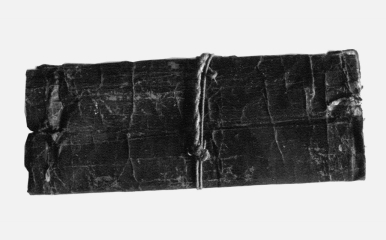
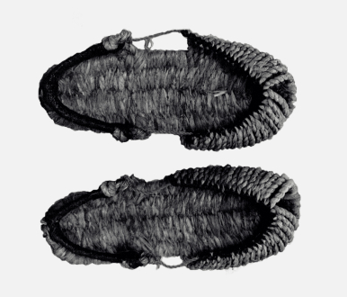
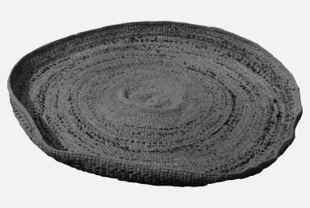
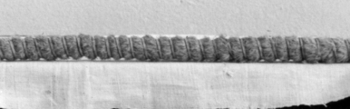

제주도 사람들은 갈옷의 감물 들이는 전승지식을 다양하게 활용하였다.
홑옷에 감물을 들여 갈옷을 만들어 입었음은 물론, 여러 가지 생활 도구에 감물을 들이는 일도 있었다.
제주도 사람들은 낚시줄, 그물, 장판지, 돗자리, 창호지, 바구니(차롱)에도 감물을 들였다.
감물 들인 갈치술
제주도 사람들은 전통적인 손줄낚시의 낚싯줄을 보통 ‘갈치술’이라고 한다. ‘갈치술’은 갈치를 낚을 때 쓰는 낚싯줄이라는 말이다. ‘갈치술’은 제주도 원초 경제사회에서 가장 보편적인 낚싯줄이다.
감물은 낚싯줄뿐만 아니라 그물에도 사용되었다.
감물염색을 통해 그물이 튼튼해질 뿐만 아니라 색깔도 물고기들이 경계심을 늦출 수 있는 어두운 색이 나오게 된다는 전승지식이 전하고 있다. 또한 제주 주민들이 즐겨먹는 자리돔 그물에도 사용되었고, 서너 집이 어울려 함께 자리 거리는 그물에 감물을 들였다고 한다.
“그물 허는 사름은 옛날엔 감물도 들여낫주게. 옛날엔 물레 엇이난에, 물레가 사젠 헤도 것도 ᄆᆞᆫ 돈 아니가게. 겐에 그물 허는 사름들, 이 고기 허는 사름들. 거 하얀 거 허민 고기 안 든덴 허멍. 감물은 좀 어둡잖아. 겡 감물 들여낫어, 그물에도.”1)
(그물 하는 사람은 옛날엔 감물도 들였었지. 옛날엔 물감 없으니까, 물감이 사려고 해도 것도 모두 돈 아니냐. 그래서 그물 하는 사람들, 이 고기 하는 사람들. 거 하얀 거 하면 고기 안 든다고 하면서. 감물은 좀 어둡잖아. 그래서 감물 들였었어, 그물에도.)
“엿날엔 저 우리 촌에 살민 우리 서녁 집이 감낭이 막 하. 하민 그 해각 사람들 자리 거리는 그물. 그 자릿그물에 ᄒᆞᆫ 해에 ᄒᆞᆫ 번 감을 들여사 헌덴. 경 아녀민 보그락헤여 불어근에게 그 ᄎᆞᆫ물에 드리쳥 경 드러 허는 거난에. 자릿그물. 경허민 그것에 감을 ᄒᆞᆫ 해에 ᄒᆞᆫ 번 들이젠 허민 그 ᄒᆞᆫ 크게 허젠 허믄 ᄒᆞᆫ 서너 집 어울엉 허는 거민, 막 ᄃᆞᆯ아와근에 ᄒᆞᆫ 사름이 감 멧 말썩 사오렌 허민 웃드레로 올라왕 ᄉᆞ뭇 아유 감 엇인디 우리 집이 ᄑᆞᆸ서, ᄑᆞᆸ서 허민. 오란 사기로 허여 불엇어 허민. 아이고, 게믄 어떵헤 허민. 아무 디 강 봐 허민. ᄄᆞ시 그 집이 ᄃᆞᆯ아강, 경 허곡. 경 헤당 감을 하영 사당 그 ᄒᆞ루에 그거 받젠 허민 동네, 난드르 사름들 ᄆᆞᆫ 모다졍 ᄈᆞᆫ덴 허멍 막 웃어낫저. 경 제기 헤사 사둘 허거나게, 그걸 ᄆᆞᆫ 들이젠 허민.”2)
(옛날엔 저 우리 촌에 살면 우리 서쪽 집에 감나무가 아주 많아. 많으면 그 해각 사람들 자리돔 뜨는 그물. 그 ‘자릿그물’에 한 해에 한 번 감을 들여야 한다고. 그렇게 않으면 보각해 버려서 그 짠물에 들이뜨려서 그렇게 들이 하는 거니까. ‘자릿그물’. 그러면 그것에 감을 한 해에 한 번 들이려고 하면 그 한 크게 하려고 하면 한 서너 집 어울려서 하는 거면, 마구 데려와서 한 사람이 감 몇 말씩 사오라고 하면 ‘웃드레’로 올라와서 사뭇 아유 감 없는데 우리 집에 파십시오, 파십시오 하면. 와서 사기로 해 불었어 하면. 아이고, 그러면 어떡해 하면. 아무 데 가서 봐 하면. 다시 그 집에 데려가서, 그렇게 하고. 그렇게 해다가 감을 많이 사다가 그 하루에 그거 받으려고 하면 동네, 대평 사람들 모두 모아져서 빤다고 하면서 마구 웃었었지. 그렇게 재우 해야 ‘사둘’ 하거나, 그걸 모두 들이려고 하면.)
-
감물 들인 담배쌈지
담배쌈지에도 감물 염색을 했는데 ‘담배쌈지’는 살담배(칼 따위로 썬 담배)나 잎담배를 넣고 다니는 주머니다.
 -
앞깍에 헌 갈옷 천을 댄 초신
제주에서는 헐린 갈옷 천으로 초신 ‘앞깍’을 덧엮어 신었다. ‘초신’은 여러 가지 풀로 만든 짚신이다. 초신 ‘앞깍’에 헐린 갈옷 천 따위를 짚에 물리며 꼬아 만들어야 더욱 부드럽게 되어 발가락의 촉감이 좋았다.
 -
헌 갈옷 천을 함께 엮어 만든 ᄀᆞ렛방석
제주에서는 헐린 갈옷 천으로 ‘ᄀᆞ렛방석’을 덧엮기도 했다. ᄀᆞ렛방석은 ‘ᄀᆞ레(맷돌)’를 쓸 때 밑에 까는 방석으로, 짚으로 둥그렇게 만든다. 볏짚으로 꼰 줄을 날줄 삼고, 볏짚, 헝겊, 헐린 갈옷 천으로 씨줄을 삼았다.
 -
헌 갈옷 천으로 묶은 화싕
제주도 사람들은 헐린 갈옷의 천을 다양하게 활용하였다. 헐린 갈옷 천으로 ‘화싕(화승)’을 묶기도 했는데, 화싕은 억새꽃을 둥그렇게 묶어 불씨를 유지하는 도구이다.

제주도에서는 집안 바닥에 까는 장판에도 감물을 들였다.
감물을 들이면 빳빳해지면서 튼튼하고 질긴 성질로 변해서 오래도록 사용할 수 있었다고 한다.
“엣날은 장판을 들이잖아. 장판에다가 멕이면은 장판도 문드럽고, 장판엔 뭉그린 거 봐낫어. 엣날에는 흙땅인데 장판 영 ᄒᆞ면은 종이로 ᄇᆞ르잖아. 경ᄒᆞ면 감 멕이면은 뻣뻣헤지거든. 그믄 그걸 질기라고 싹싹싹 막 영 씰멍 멕여 가. 게믄 그 장판이 막 오래 가더라고.”3)
(옛날은 장판을 들이잖아. 장판에다가 먹이면 장판도 매끄럽고, 장판에 문지른 거 봤었어. 옛날에는 흙땅인데 장판 이렇게 하면 종이로 바르잖아. 그러면 감 먹이면 빳빳해지거든. 그러면 그걸 질겨지라고 싹싹싹 마구 이렇게 쓸면서 먹여 가. 그러면 그 장판이 아주 오래 가더라고.)
장판에 감물을 사용하는 것은 갈옷 감물들이는 방식과는 달리 먼저 종이를 바닥에 깐 다음에 감물을 바르는 방법으로 사용하였다. 즉 방 바닥에 칠을 해서 튼튼하고 오래 가도록 하는 방법으로 감물을 사용하였던 것이다.
제주도에서는 구덕이나 푸는체에도 감물을 들이거나 헌 갈옷을 붙여서 더욱 튼튼하고 오래 쓸 수 있도록 하였다.
“바구니 이제 헌 바구니덜 이제 구덕덜 그거 다 뒈어 가민 이젠 풀 쑤어근에 그 감옷덜 그런 거 찢어진 것덜 헤여근에 멕영 ᄇᆞ른구덕 ᄇᆞᆯ르는 거주게. 경허난 감ᄇᆞ른구덕도 뒈고. 또 푸는체 이렇게 푸는 거. 엿날은 푸는체에도. 그 신랑덜 바지덜 이제 다 터져 가믄 그거 놧다근에 니귀반뜩 ᄇᆞ려근에 풀 쑤어근에 그 구덕에 다 허곡 푸는체에도 다 ᄇᆞᆯ르곡. 것이 감푸는체ᄀᆞ치. 감옷으로 치졍 그거 ᄇᆞᆯ라 부난 헌 거주. 우리 엿날에 ᄇᆞ른구덕으로 살앗주게. ᄊᆞᆯ도 허민 ᄇᆞ른구덕, 방앗간에 가도 ᄇᆞ른구덕. 다 방앗간에도 저 보리ᄊᆞᆯ이여 좁ᄊᆞᆯ이여 짛젠 허민 ᄇᆞ른구덕으로 올리고 허멍 살앗주. 게난 거 다 집이서 ᄇᆞᆯ른 거주게. 옷덜 다 터진 것덜 헤근에 놧다근에.”4)
(바구니 이제 헌 바구니들 이제 바구니들 그거 다 돼 가면 이젠 풀 쒀서 그 ‘감옷’들 그런 거 찢어진 것들 해서 먹여서 ‘ᄇᆞ른구덕’ 바르는 거지. 그러니까 ‘감ᄇᆞ른구덕’도 되고. 또 키 이렇게 까부르는 거. 옛날은 키에도. 그 신랑들 바지들 이제 다 터져 가면 그거 놨다가 네모반듯하게 잘라서 풀 쒀서 그 바구니에 다 하고 키에도 다 바르고. 것이 ‘감푸는체’처럼. ‘감옷’으로 찢어서 그거 발라 버리니까 헌 거지. 우리 옛날에 ‘ᄇᆞ른구덕’으로 살았지. 쌀도 하면 ‘ᄇᆞ른구덕’, 방앗간에 가도 ‘ᄇᆞ른구덕’. 다 방앗간에도 저 보리쌀이다 좁쌀이다 찧으려고 하면 ‘ᄇᆞ른구덕’으로 올리고 하면서 살았지. 그러니까 거 다 집에서 바른 거지. 옷들 다 해진 것들 해서 놨다가.)
구덕이나 차롱, 푸는체 등에 감물을 사용하는 것은 특히 테두리 부분에 많이 하였는데, 테두리 부분이 손상되지 않도록 헌 갈옷 천으로 붙이거나 기존에 붙어 있는 천이나 종이 위에 감물을 들여서 보완하였다. 또는 테두리 부분이나 여타 다른 부분이 손상되었을 때 그 부분에 대한 수선작업으로 헌 갈옷 천을 붙이거나 감물을 들인 것이다.
제주에서는 헌 갈옷을 잘라내어 베로 꼬아서 여러 용도의 끈으로 사용하기도 하였다. 짚보다 훨씬 튼튼하여 사용하기 좋았다고 한다.
감물을 들이면 빳빳해지면서 튼튼하고 질긴 성질로 변해서 오래도록 사용할 수 있었다고 한다.
“엿날에는 그 갈옷 헐민 ᄇᆞᆨᄇᆞᆨ ᄇᆞ려근에 베 꼬와낫저. 엿날엔 찍베 엇이민, 어류민이 엿날에 논 엇인 사름들은 찝덜이 어렵주게. 경허민 그거 ᄇᆞ려근에 찍에 서껑 베 꼬와근에 허민 질기주게, 아멩헤도 찝보다는.”5)
(옛날에는 그 갈옷 헐면 박박 찢어서 바 꼬았었어. 옛날엔 짚바 없으면, 어려우면 옛날에 논 없는 사람들은 짚들이 어렵지. 그러면 그거 찢어서 짚에 섞어서 바 꼬아서 하면 질기지, 아무래도 짚보다는.)
또한 무명이나 베에 감물을 들여서 이불깔개로 쓰거나 애기구덕 바닥에 깔아 사용하기도 하는 등 다양한 방식으로 활용되었다.
“이것이 미녕이라. 나 이거 감들연에 ᄁᆞᆯ앙 눰주게게, 여름에. 겨울에 이거 못 ᄁᆞᆯ아 눕네다. 차ᄀᆞ와. 감들여 부난.”6)
(이것이 무명이야. 나 이거 감들여서 깔고 눕고 있지, 여름에. 겨울에 이거 못 깔고 눕니다. 차가워. 감물들여 버리니까.)
“상복 허단에 나쁜 베덜 이신 거 감물들연에 여름에 깔아 눕고, 더퍼 눳주게. 경 헤난 나중에 ᄈᆞᆯ아가난 거멍헤가난 데껴 불언.”7)
(상복 하다가 나쁜 베들 있는 거 감물들여서 여름에 깔아 눕고, 덮고 누웠지. 그렇게 하니까 나중에 빨아 가니 거메가니까 던져 버렸어.)
“나 우리 손지 베 헤근에 감들연에 저 뭣고? 아래 ᄁᆞ는 거. 지성귀 ᄀᆞ치 영 ᄁᆞ는 거. 구덕에 거 헤줫주. 여름에. 거 애기구덕에 까는 거. 그거 감들여근에.”8)
(나 우리 손자 베 해서 감들여서 저 무엇이니? 아래 까는 거. 기저귀 같이 이렇게 까는 거. 요람에 거 해줬지. 여름에. 거 요람에 까는 거. 그거 감들여서.)
제주도 사람들은 아직 익지 않은 감을 활용한 삶음식문화의 전통도 창조한 것으로 보인다.
물론 육지부에도 감을 장처럼 담궈서 먹는 사례가 다수 나타나지만 제주에서는 이것이 어떻게 이루어졌는지 살펴볼 필요가 있다.
짐칫감
침감의 형태인 ‘짐칫감’은 감물을 들이고 남은 감을 훌륭한 간식으로 만들어 먹었던 제주도의 향토음식이다. ‘김칫감’이라고도 하며 몇몇 제보자는 정말 맛있는 간식이었다고 추억할 정도로 맛이 좋았다고도 한다.
“만약에 그 감이 풀에 들당 남으면은 옛날엔 간식이 엇잖아. 그게 그 감이 조금 노리롱 헤 가민, 그 감 망데기에 놔 가지고 물 뜨끈뜨끈헤 가지고 소금 조금 놩 거기다가 집어넣어. 뚜껑 딱 닫아. 나는 그 간식이 그게 제일 맛잇어. 그게 하루 한 번이나 한 이틀에 한 번씩 다섯여섯 번 갈으면, 그 떫은맛이 하나도 없어. 그거 우리가 간식이라. 김칫감이라고 헤. 장에 강 또 파는 집도 잇어.” 9)
(만약에 그 감이 풀에 들이다가 남으면 옛날엔 간식이 없잖아. 그게 그 감이 조금 노르스름해 가면, 그 감 ‘망데기’에 놓아 가지고 물 뜨끈뜨끈해 가지고 소금 조금 놔서 거기다가 집어넣어. 뚜껑 딱 닫아. 나는 그 간식이 그게 제일 맛있어. 그게 하루 한 번이나 한 이틀에 한 번씩 대여섯 번 갈면, 그 떫은맛이 하나도 없어. 그거 우리가 간식이야. ‘김칫감’이라고 해. 장에 가서 또 파는 집도 있어.)
“감낭 하나씩은 꼭 잇엇주기게, 집집마다. 그거 감들이젠 허난 헷주기게. 먹젠 헌 건 쉐뿔감이나 ᄀᆞ레감이엇고 그거는 우리 초등학교 다닐 때도 우리 간식거리가 엇으난에 그거를 절영 저기 뭣고? 우렷젠 허주. 우령 소금물이 이렇게 따뜻한 물로 헤 가지고 우령. 그것이 우린 유일한 간식거리랏어. 우리 소풍 갈 때도 그거 헹 가고 운동회 때도 그거 헹 가고. 그건 익형도 먹고 헤신디 우령 먹는 그것이 ᄀᆞ레감 아니민 저 쉐뿔감. ᄑᆞᆺ감이 잘 안 우려져. 그건 하도 쪼라와 부난 경 헨게.”10)
(감나무 하나씩은 꼭 있었지, 집집마다. 그거 감들이려고 하니까 했지. 먹으려고 한 건 ‘쉐뿔감’이나 ‘ᄀᆞ레감’이었고 그거는 우리 초등학교 다닐 때도 우리 간식거리가 없으니까 그거를 절여서 저기 무엇이니? 우렸다고 하지. 우려서 소금물이 이렇게 따뜻한 물로 해 가지고 우려서. 그것이 우린 유일한 간식거리였어. 우리 소풍 갈 때도 그거 해서 가고 운동회 때도 그거 해서 가고. 그건 익혀서도 먹고 했는데 우려서 먹는 그것이 ‘ᄀᆞ레감’ 아니면 저 ‘쉐뿔감’. ‘ᄑᆞᆺ감’이 잘 안 우려져. 그건 아주 떫어 버리니까 그렇게 하던데.)
감물을 들이고 남은 감이 노랗게 색이 변해갈 때 따뜻한 물과 소금을 함께 단지에 넣고 물을 여러 번 갈아주면 맛있는 짐칫감 간식이 완성되는 것이다.
감씨(감쭈시)
‘감쭈시’ 또는 ‘감씨’는 감즙을 내기 위해 돌확에 넣고 감을 찧으면 감이 으깨지면서 안에 있던 씨가 나온 것이다. 감이 익기 전 감씨는 하얀 색의 부드럽고 쫄깃하면서 달콤한 맛을 낸다.
“감들이젠 허민 감이 너무 새어 불민 그 속에 감씨가 잇주게. 감씨가 새어 불면은 감옷이 곱지 안허고 감씨가 그냥 영 니빨로 씹어 먹게 된 때가 경헌 때가 제 기수. 경헌 때 들여야 감옷도 좋고.
감 ᄈᆞᆺ아 가민 감씨가 헤영케 나오주게. 게민 그 연헌 때는 감들여 나민 그 씨도 막 줏어 먹어낫주게.
칠월 그물어 가민 ᄒᆞ썰 새여근에 저 감씨도 잘 못 줏어 먹어. 헤영케 안 나와. ᄒᆞ썰 이상케, 푸리롱허게 나와.”11)
(감물들이려고 하면 감이 너무 쇠어 버리면 그 속에 감씨가 있지. 감씨가 쇠어 버리면 ‘감옷’이 곱지 않고 감씨가 그냥 이렇게 이빨로 씹어 먹게 된 때가 그런 때가 제 기수. 그런 때 들여야 ‘감옷’도 좋고.
감이 빻아 가면 감씨가 하얗게 나오지. 그러면 그 연한 때는 감들이고 나면 그 씨도 마구 주워 먹었었지.
칠월 저물어 가면 조금 쇠어서 저 감씨도 잘 못 주워 먹어. 하얗게 안 나와. 조금 이상하게, 푸르스름하게 나와.)
위 사례처럼 감씨를 먹는 즐거움은 감물 들이는 과정에서 파생된 것으로, 작업을 하는 어른뿐만 아니라 아이들이 자연스럽게 감물 들이는 과정을 보고 들으며 습득하게 되는 계기가 되었던 것으로 보인다. 또한 감씨의 색과 맛을 통해서 감물 들이기에 가장 적합한 시기인지를 가늠하기도 했던 것으로 나타나 경험의 축적에 의해 형성된 전승지식으로서 성격도 드러나고 있다.
제주도 사람들은 갈옷과 관련하여 다양한 명칭과 쓰임새에 따른 새로운 용어의 창조 등을 이루어왔다.
또한 부분적이기는 하지만 다양한 형태의 공동체문화로서 갈옷문화를 전승해왔음이 확인된다.
갈옷과 관련한 제주도 향언과 언어전승
제주 갈옷에 대한 인식이 드러나는 다양한 언어전승이 이어지고 있는데, 특히 갈옷 덕분에 목숨을 구한 이야기, 갈굴중이의 속옷 전통에서 노동복으로의 변신 등과 관련한 이야기가 전승되고 있다.
기록에 의하면 조선시대 영조(英祖) 39년(1763) 안덕면 창천리 사람 강위빙(姜渭聘)이 한양으로 압송되어 심문을 받을 때 입고 갔던 갈옷 덕으로 특별히 사면(赦免)을 받았다는 이야기가 전하기도12) 한다.
“沈來復이라는 사람이 英祖 39年(1763) 李麟佐亂에 연유되어 大靜面 柑山里에 유배왔다. 그는 마을 사람 姜翊周(姜別將, 座首)와 좋지 않은 관계를 가지게 되었다. 沈이 그해 8월에 서울로 압송되는데 이때 姜渭聘도 연유된 혐의로 同行하게 된다. 姜渭聘이 太僕寺에서 裸體로 심문 받게 되었는데 判官이 그가 입은 갈옷을 보고 이상하게 여겨 묻자 ‘이것은 濟州 農夫의 옷인데 밭일을 하는 날 갑자기 王命이 내렸으므로 벗을 겨를이 없이 그냥 왔다’고 했다. 그 事情을 들은 判官이 불쌍한 생각이 들어 임금께 여쭈어 赦免받았다.”13)
제주 사람 강위빙이 위기에 처했을 때 제주의 정체성을 잘 담아내고 있는 갈옷이 목숨을 살려주게 되었다는 이야기로, 제주인의 갈옷에 대한 자부심과 육지부에서의 갈옷에 대한 호기심을 엿볼 수 있는 일화이다.
제주 갈옷과 관련해서 노동복으로서 성격이 뚜렷하게 드러나는 향언이 전하는데, 제주 출신의 의류학자 고부자 선생님이 구술 내용이다.
“돼지날, 돗날, 계날. 갈중이 버신날어시 넙드난보난 저승질이 앞이러라!”14)
위의 말은 ‘평생 갈옷을 벗지 못하고 죽도록 고생만 하다보니 죽을 날이 되었다’는 뜻이다. 특히 제주 여성들에게 ‘노동’과 ‘고생’이라는 이미지가 갈옷에 투영되어 있음을 확인할 수 있다. 제주 갈옷은 제주 여성들의 고된 노동과 함께 해오며 속옷으로 여겨지던 굴중이를 노동복으로서 갈굴중이로 탄생시키는 등 제주만의 고유한 갈옷 문화로 발전시켜온 것이다.
갈옷 관련 공동체 문화
감물들이기 과정은 일정한 노동력을 필요로 하게 되고 그 장소 또한 대부분 집안 마당에서 이루어지는 경우가 대부분이기 때문에 소집단 중심의 공동체문화가 나타난다. 또한 감물들이기와 관련된 공동체적 관행이 나양하게 나타나는데 원료가 되는 감에 대한 채집이나 구입, 이에 대한 보상 등과 관련하여 각 지역이나 마을마다 독특한 공동체적 관행을 보여주고 있어 주목된다.
“어린 때들은 영 메여 앚아근에 동네 사름들토 들일 사름 시믄 ᄀᆞ치 앚앙 허곡 경 안 허면은 그자 이녁만썩 허고 경 헤낫수다. ᄒᆞᆫ 동넷 사름들 들이젠 허민 영 ᄀᆞ치 수눌멍 들이젠 허면 ᄒᆞᆫ 서너, 네 사름? 경헹 헤나수다.
(감은) 삼달리도 가 사곡, 동네서도 또 시민. 또 이녁 집이 신 사름은 이녁 거 탕 오곡, 경허멍 헤낫수다게.”15)
(어릴 때들은 이렇게 모여 앉아서 동네 사람들도 들일 사람 있으면 같이 앉아서 하고 그렇게 안 하면 그저 이녁만씩 하고 그렇게 했었습니다. 한 동네 사람들 들이려고 하면 이렇게 같이 품앗이하면서 들이려고 하면 한 서너, 네 사람? 그렇게 했었습니다.
(감은) 삼달리도 가서 사고, 동네에서도 또 있으면. 또 이녁 집에 있는 사람은 이녁 거 따서 오고, 그러면서 했었습니다.)
감물 들이는 작업은 대부분 공적 장소가 아닌 가정집에서 이루어졌기 때문에 대규모의 공동체 단위로 이루어지지는 않았던 것으로 보이며, 대부분 가정집에서 소집단 규모로 몇 가구 정도가 모여서 행해져온 것으로 파악된다. 또한 갈옷의 원재료인 감을 마련하는 데 있어서도 몇 가구가 공동으로 구입하거나 물물교환하여 이 감을 가지고 공동으로 감물들이기를 한 사례들도 나타난다.
제주 갈옷과 관련한 공동체 생활 규범도 나타나는데, 주민들이 오가는 공도(公道)에서는 갈굴중이만 입고 다녀서는 안 되고 반드시 검은색이나 흰색 치마를 입어야 한다는 것이다. 이와 관련하여 이즈미 세이치는 아래와 같이 기록하였다.
“갈굴중의 바람으로 농사와 기타 노동에 종사할 수는 있으나 갈에서는 반드시 이 위에 치마(백 또는 흑)를 입지 않으면 실례가 된다. 그런데 조천면 함덕리에서 동쪽의 해촌 여자들은 이를 안 지키기 때문에 다른 마을 사람들로부터 비난받고 있었다.”16)
공동체 삶에 있어서 노동복으로는 갈굴중의를 입지만 공식적인 주민들간의 접촉이 예상되는 때에는 반드시 그 위에 치마를 입어야 한다는 규범이 전승되었다. 하지만 함덕리 동쪽 해촌에서는 이러한 규범에 얽매이지 않고 노동복으로서 갈옷의 성격을 강조하면서 일상생활에서도 갈옷 착용을 이어가는 모습이 나타났던 것으로 보인다. 체면을 차리는 예의도 중요하지만 노동을 하는 것이 곧 생명을 지키는 것이었기에 척박한 제주의 환경 속에서 공도에서도 갈옷의 착용을 하기 시작했던 것으로 파악된다.
자료 출처
- 현옥열(서귀포시 법환동) 구술 자료.
- 임종은(서귀포시 천지동) 구술 자료.
- 백여옥(조천읍 북촌리) 구술 자료.
- 현봉래(구좌읍 월정리) 구술 자료.
- 임종은(서귀포시 천지동) 구술 자료.
- 김희춘(한림읍 수원리) 구술 자료.
- 이순자(대정읍 신평리) 구술 자료.
- 현봉래(구좌읍 월정리) 구술 자료.
- 양순자(한림읍 명월리) 구술 자료.
- 박복선(애월읍 광령리) 구술 자료.
- 이춘희(대정읍 일과1리) 구술 자료.
- 고부자, ｢제주 갈옷의 전통과 계승 발전 방향｣, ｢제주 갈옷 학술대회 자료집｣, 제주학연구센터, 2023.7.10., 6쪽.
- 고병오, 박용후 공편, ｢元 대정읍지｣, 박문출판사, 1968, 122쪽(고부자, ｢제주도 의생활의 민속학적 연구｣, 서울여자대학교 박사논문, 1994, 40쪽에서 재인용).
- 고부자(제주시 노형동) 구술 자료.
- 강대선(성산읍 신산리) 구술 자료.
- 이즈미 세이치, 김종철 옮김, ｢제주도｣, 여름언덕, 2014, 243쪽. 다른 번역본에서는 “굴중이 모습으로 농사 그 밖의 노동에 종사할 수 있지만 공도(公道)에서는 반드시 이 위에 희거나 검은 치마를 입지 않으면 결례가 된다. 그러나 조천면 함덕리로부터 동쪽의 해촌 여자들은 이 규정을 지키지 않는 때문에 다른 마을 사람들로부터 비판을 받고 있었다.”고 하였다. 이즈미 세이치, 홍성목 역, ｢제주도｣, 제주문화, 2010, 310쪽.